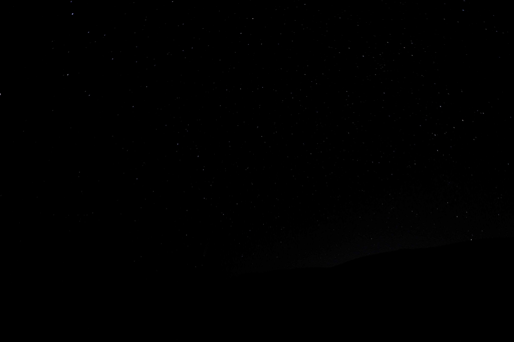
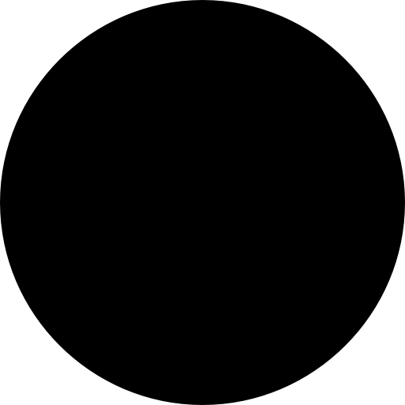
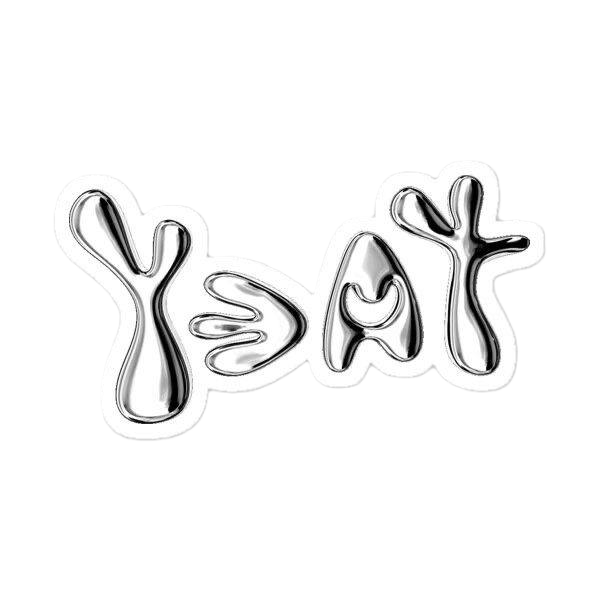

В последние годы Yeat по праву стал одним из наиболее выдающихся и известных представителей современной трэп-индустрии.
Умело воспользовавшись популярностью музыкального направления «рейдж», он не только адаптировал его под себя, но и внёс весомый вклад в развитие всего поджанра.
Теперь он готов начать новый этап своей успешной карьеры, презентуя эклектичный мини-альбом «DANGEROUS SUMMER»,
служащий своеобразным аперитивом к полноформатному проекту под названием «A DANGEROUS LYFE».

Критики и слушатели отметили, что EP стал своеобразным «чистилищем творчества» и подарком фанатам перед большим альбомом . Продюсирование здесь выведено на первый план — это смесь хаотичных, энергичных битов и более мелодичных, атмосферных моментов. Звук балансирует между гипнотическим трансом и агрессивным давлением, превращая каждый трек в переходную фазу — момент, когда старые формы ещё не умерли, а новые уже пульсируют на периферии.
Это не просто набор песен, а намеренный переходный этап, демонстрирующий «жизненную силу Yeat» перед его следующим масштабным проектом. Критики назвали EP «чистилищем творчества».
Треки вроде «LOCO» описывают как «бравурный старт для слэма на концертах». Это чистый драйв и агрессия, задающие тон всему EP.
Встречаются и более спокойные, «аэро-поп» моменты, как в «FLY NITE» c FKA twigs. Продюсирование выведено на первый план.


Связь с альбомом "ADL"
Это не просто EP, а прямая отсылка к его двойному альбому «ADL» (A Dangerous Lyfe / A Dangerous Love), вышедшему в марте 2026 года. Название говорит само за себя: даже трек «[ADL IS COMING]» напрямую анонсирует грядущий альбом. Концепция: если EP задал «опасное лето», то альбом развил эту тему, представив Yeat в образе «крестного отца» рэпа с масштабной маркетинговой кампанией в стиле «Клана Сопрано».
Что касается звучания, ощущения от EP стали ступенькой к более сложным и живым аранжировкам двойного альбома, где Yeat экспериментировал с хорами и гитарными семплами (вроде Элтона Джона).
Up 2 Më
Альбом, ставший настоящим прорывом для Yeat. Именно с него началась массовая популярность рэпера. Пластинка закрепила его уникальный «рейдж-звук» — с глитчевыми 808-ми басами, агрессивными битами и фирменными скандирующими вокалами.
2 Alivë
Второй студийный альбом, который укрепил позиции Yeat на вершине. Пластинка более коммерческая и энергичная, чем первая. Главная фишка — звёздные коллаборации: при участии Ken Carson, Lil Uzi Vert, Gunna, Young Thug, Yung Kayo и даже продюсера BNYX®.
AftërLyfe
Третий студийный альбом, который показал новую сторону Yeat. Звучание стало темнее, тяжелее и агрессивнее — меньше "космических" синтизаторов, больше лоу-файных текстур и искажённых вокалов.
2093
Четвёртый студийный альбом и настоящий творческий скачок для Yeat. Это полностью концептуальная работа в жанре киберпанк-рэпа. Yeat создал мрачное будущее, вдохновлённое фильмом "Бегущий по лезвию 2049"